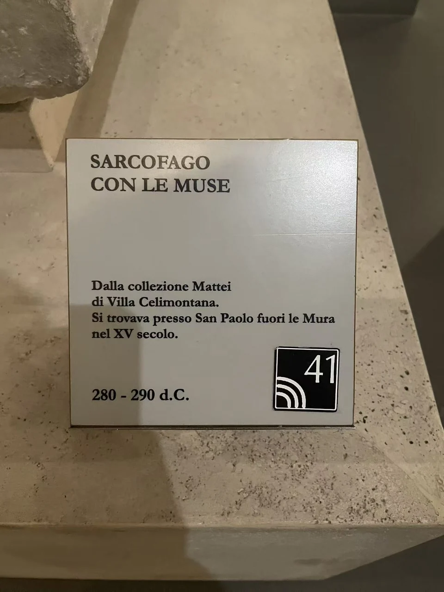

ROMAN SARCOPHAGI / R07
缪斯柱廊式石棺
缪斯站在一座小小的柱廊里，各自拥有独立的空间，又共享同一节奏。

- 年代
- 280–290年
- 材料
- 大理石（图像文献引馆签）
- 收藏
- 罗马国家博物馆
- 观看地点
- 罗马国家博物馆·马西莫宫 · 罗马
- 馆藏号
- 80711（学术文献引馆藏目录）
柱子之间的持物
扭转的柱身把正面分为数个单元，拱龛内的人物各自转向，长衣褶线与柱纹相互呼应。两端照片显示，这种建筑框架还延伸到短边。戏剧面具、乐器与卷轴使缪斯的文化职掌成为可观看的物件；残损处则让某些辨认保留空白。 [9]
后来的人怎样看它
这件石棺曾属马泰伊收藏。Kathleen W. Christian讨论它在文艺复兴时期的接受：有画家单独摘画持物，也有人更留意头部比例与衣褶。今天再逐格细看，便能理解同一件古物为什么会不断引出不同的问题。 [10]
从另一个角度看


现场展签 · 1张
